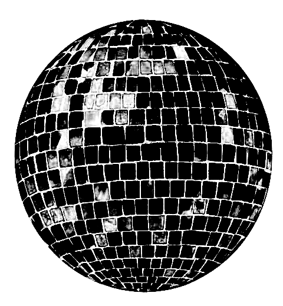
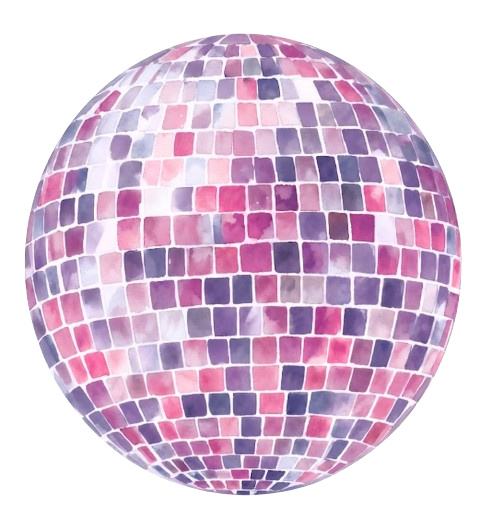
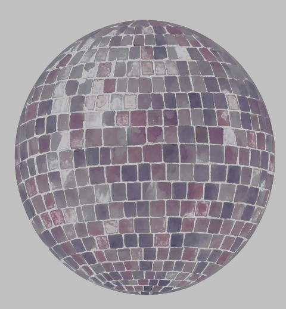

image-luminescence
Your images, glowing.
Colors untouched.
Whites lift beyond your screen’s white on HDR displays. Everything else stays exactly as you made it.
Drop an image or click to choose
png or jpeg · jpeg bases kept byte-for-byte
One file, two pictures.
SDR screens see the first picture. HDR screens see the file become the second. Nobody sees both.
Everyone sees
drop or click
HDR reveals
drop or click
The second picture appears at normal brightness — this is a picture swap, not a flashbang. Thumbnails always show the first picture.
One file, two images.
Your image, untouched. The file’s base is your exact sRGB pixels — byte-for-byte when you feed it a jpeg. Every display on earth shows your true colors.

A glow map rides along. A second, hidden grayscale image — this is the disco ball’s, for real. White pixels mean “boost the matching pixel,” black means “leave it alone.” Nothing in your image is blurred or changed.
HDR displays apply it. Capable screens boost the marked pixels into brightness headroom. Everything else ignores the stencil and sees a perfectly normal jpeg.
The curve behind the sliders: nothing is boosted until a pixel nears white, then the glow ramps to full strength. The format is the ISO 21496-1 gain map — the same mechanism every iPhone photo has used since iOS 17.


Now drag your screen brightness down. Everything dims except the luminesced whites — the grout between tiles holds its intensity like it’s lit from behind. Converted files glow in the browser — Chrome is the sure thing; desktop image viewers often show correct colors without the boost.
Take it home.
command line
git clone https://github.com/kwicz/image-luminescence cd image-luminescence brew install imagemagick libultrahdr pip3 install numpy # skip if you have xcode clt python3 luminescence.py logo.png # -> logo-luminescence.jpg --boost 49.26 glow ceiling, default max --knee 0.85 how near white before glow
which tool
Two converters, two strategies.
luminescence.py makes gain-map jpegs: glow as
removable metadata, safe everywhere — pipelines that
re-encode (Slack) just show a normal image. Use it by default.
luminescence_pq.py makes PQ pngs: glow baked into
the pixels, survives pipelines that keep PNG profiles (LinkedIn
— how those glowing company icons work), but viewers that
ignore the profile show a washed-out ghost (Slack). Only for
destinations you’ve verified.
luminescence_reveal.py packs two different
pictures into one file: SDR viewers see the first, HDR
viewers see the file become the second. One artifact of the
format nobody else is using.
this page
The converter above runs the same math compiled to the browser — canvas in, gain-map jpeg out. Your image never leaves your machine.
roadmap
Also: brew tap kwicz/tap && brew install
image-luminescence, pip install from the clone, a Figma
plugin, and a Finder quick action. Details in the
repo.
displays
The glow needs a screen with brightness headroom. Rough vintages: MacBook Pro 2021+ glows hard, other Macs from ~2016 glow gently when dimmed, iPhone 12+ and OLED phones glow, and HDR monitors/TVs (roughly 2016+, real HDR — not “HDR400”) glow. Standard-range screens like Apple’s Thunderbolt Display show correct colors, no glow. Headroom shrinks as brightness rises — dim for maximum glow. This page checks your display live, in the corner below.
format
ISO 21496-1 / Ultra HDR gain-map jpeg · glows in Chrome and Edge on HDR displays, Android, and iOS 17+ Photos. macOS Preview shows correct colors but may not boost. Anywhere unsupported it’s simply a normal image — correct colors, no glow. The gain curve — how hard each pixel is boosted — ramps from your threshold to your ceiling and is stored as metadata, which is why macOS describes these files as “Adaptive Gain Curve.”